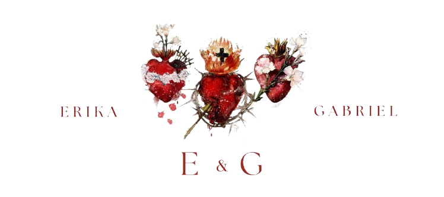

convidam para seu casamento
SÁBADO | 06 de JUNHO de 2026 | 09:30 Horas
"Nihil amori Christi praeponere" (Rb 4, 21)
Queridos amigos e familiares, criamos este site para compartilhar com vocês alguns detalhes sobre o nosso grande dia. Estamos muito felizes e temos certeza que será um momento muito especial.
Não esqueça de confirmar sua presença! Nossa lista de presentes também está aqui no site ♡
Por tratar-se de uma celebração com Santa Missa, solicitamos, por gentileza, trajes formais e adequados ao ambiente religioso.
Assim, pedimos que as mulheres evitem roupas curtas e que os homens utilizem traje social.
Encerrada a cerimônia religiosa, desejamos prolongar a alegria deste dia na companhia de todos. A recepção ocorrerá em local com consumo de responsabilidade de cada convidado, e o cardápio será enviado antecipadamente para conhecimento dos convidados.